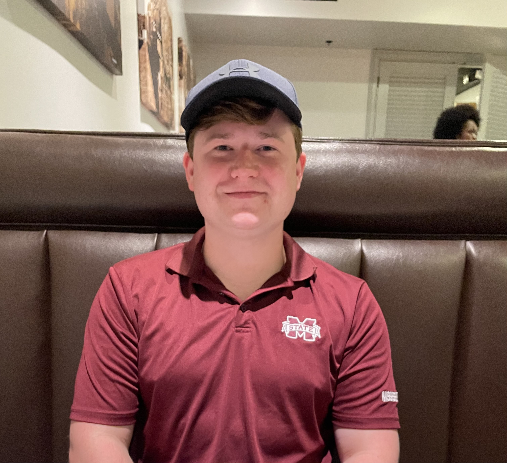

2024 Resume
Landon Goff's Digital Resume
Education
Mississippi State University 2021-2024
Mississippi Gulf Coast Community College 2018-2021
Work Experience
Entergy MS LLC
- Used PLS CADD for structure change outs, to correct phasing, follow vertical clearance requirements, check
terrain, etc.
- Collected information for planned projects by making staking sheets with proposed structure types,
backfill used, pole height, class, and additional comments if needed.
- Coding in excel to create a master material spreadsheet that would correctly order material based off shield
wire size, conductor size, voltage, and framing type.
- Transmission line scoping for various projects to see existing structures’ condition and any missing
information not documented.
- Obtain railroad, highway, and levee permits per guidelines needed for future projects.
- Maintain the transmission line database by updating project completed dates, adding comments, and asbuilts if needed
- Create flight hazard plans for yearly helicopter patrols by using Google Earth
Skills:
- Microsoft Suite
- PLSCADD
- Communication Skills
